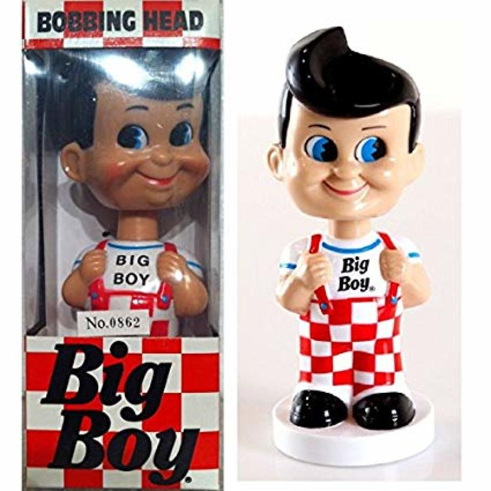

Miniso & Marvel
La Historia de los Fukos
Historia
Todo empezó en el año 1998 cuando “Mike Beacker” junto a “Rob Schwartz” y “Sean Wilkinson” decidieron crear su propio negocio el cual buscaba innovar el mundo de los juguetes. Inicialmente la empresa la nombraron “Compañía de Diversion” tras la mezcla de palabras diversión (Fun) y compañía (Company)que tiempo después se convirtió en Funko. Su primer prototipo fue una figura llamada “Computer Bob” el cual fue una figura muy diferente a las que hoy en día conocemos en el mercado. La figura era un hombre con la cabeza de computadora, la cual no tuvo el éxito esperado. El triunfo de Beacker inicio con la idea de “muñecos cabezones” característica principal de las figuras hoy en día. Cuando creo la figura “Big Boy” el cual era el icono de un restaurante.
Una caja de Big Boys fue obsequiada en una tienda de los estudios Universal “Sparkys” con el fin de determinar si las figuras de colección tenían acogida en el público y así fue. En un solo día las figuras Big Boy se agotaron y así comenzó el inmenso éxito de Funko. En el año 2005 Mike Becker vende su compañía a Brian Marotti, actual CEO de Funko, lo cual trajo como consecuencia tres años de estancamiento debido a la falta de nuevas ideas para la marca. En el año 2010 Funko hace un relanzamiento de su marca en la convención internacional de San Diego en donde tuvo la fortuna de presentar los productos que hoy en día se conocen como Figuras Pop! En el evento se presentaron los personajes de Batman y el Joker tras la adquisición de la licencia Dc Comics. A través de los años Funko inicio con la adquisición de diferentes licencias como Marvel Comics, Star Wars, Disney entre otras. Lo cual les permitía fabricar figuras Funko de un sin número de personajes amados por grandes y chicos.